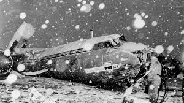
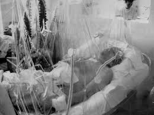

The Munich air disaster occurred on 6 February 1958 when British European Airways Flight 609 crashed on its third attempt to take off from a slush-covered runway at Munich-Riem Airport, West Germany. On board the plane was the Manchester United football team, nicknamed the "Busby Babes," along with supporters and journalists. Of the 44 people on board, 21 died at the scene, with another succumbing to injuries later. The crash decimated one of the most talented football teams in English history and sent shockwaves through the sporting world.
Under manager Matt Busby, Manchester United had become the youngest team to win the Football League First Division in the 1955–56 season, successfully defending their title the following year. The team, with an average age of just 22, was built around a core of talented youth players developed through the club's academy. They represented a new, attacking style of football that captured the imagination of fans across Britain and Europe.
Key Players Aboard:
Manchester United had traveled to Belgrade to play the second leg of their European Cup quarter-final against Red Star Belgrade. After drawing 3-3 (aggregate 5-4 to United), the team and accompanying party boarded a charter flight back to Manchester with a planned refueling stop in Munich.
After refueling in Munich, the aircraft (an Airspeed Ambassador) attempted to take off twice but aborted due to boost surging in the engines. On the third attempt, at 3:04 PM, the plane failed to achieve sufficient lift, overran the runway, crashed through a fence, struck a house, and broke apart.
Twenty-one people died instantly, including:
Several critically injured survivors were rushed to Munich's Rechts der Isar Hospital. Duncan Edwards, despite a valiant 15-day fight, succumbed to kidney damage, bringing the final death toll to 23.
The survivors faced immense physical and psychological trauma. Matt Busby received the last rites twice but survived. Bobby Charlton, Harry Gregg, and Bill Foulkes were among those who escaped with injuries but carried the emotional scars forever. Gregg was hailed as a hero for returning to the burning wreckage to pull survivors to safety, including a pregnant woman and a 20-month-old child.
The tragedy united the football community. Rivals offered to loan players, and donations poured in from around the world. A makeshift United team, managed by assistant Jimmy Murphy (who missed the trip due to Wales managerial duties), reached the FA Cup final that season, losing to Bolton.
Matt Busby rebuilt the team over the following decade, eventually creating a new generation of stars including George Best and Denis Law. United won the European Cup exactly ten years after the disaster in 1968, with survivors Bobby Charlton and Bill Foulkes in the team. Busby described the victory as the club's tribute to those who died.

Players:
Club Staff:
Journalists:
Others:
The Munich Air Disaster remains an integral part of Manchester United's identity. Each year on February 6th, a service is held at Old Trafford. The phrase "We'll never die" associated with the Busby Babes has become a testament to the club's resilience. The tragedy transformed United from a talented team into a global institution embodying perseverance, rebirth, and eternal memory.
"Flowers of English football, gathered together, they said goodbye to their friends, many thousands, in the setting of a German night. And then, soon afterwards, came the tragedy. It was in that moment that the club ceased to be just a football club and entered the fabric of our lives." - David Meek, Manchester Evening News